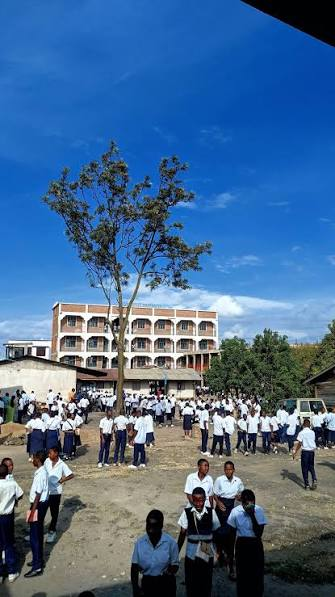

Educating Mind, Hand, and Heart for Service
Located in the heart of Goma, Institut Maranatha provides holistic Christian education that combines national academic excellence with strong moral values and practical skills.

Description: Wide exterior photo of the main building of Institut Maranatha in Mabanga, Goma, with students in uniform walking in the schoolyard.
Our Holistic Educational Approach
Inspired by Adventist educational philosophy, we nurture every dimension of a young person's growth.
🧠 Academic Excellence
Rigorous adherence to the DRC Ministry of Education curriculum, preparing students for state exams and university success.
✝️ Spiritual & Moral Values
Daily devotionals, Bible classes, and mentorship grounded in Christian integrity, respect, and compassion.
🤝 Practical & Civic Skills
Computer literacy, environmental stewardship around Lake Kivu, and leadership training through youth clubs.
Latest News & Campus Highlights
Stay informed about academic milestones and community events at Institut Maranatha.
 Academics
Academics
 Achievement
Achievement
Top Results in North Kivu EXETAT
Our graduating class achieved outstanding scores across all Humanities sections, ranking among Goma's top schools.
 Community
Community
Green Goma Environmental Drive
Our Pathfinder Club partnered with local leaders in Mabanga to plant 300 trees around our neighborhood.